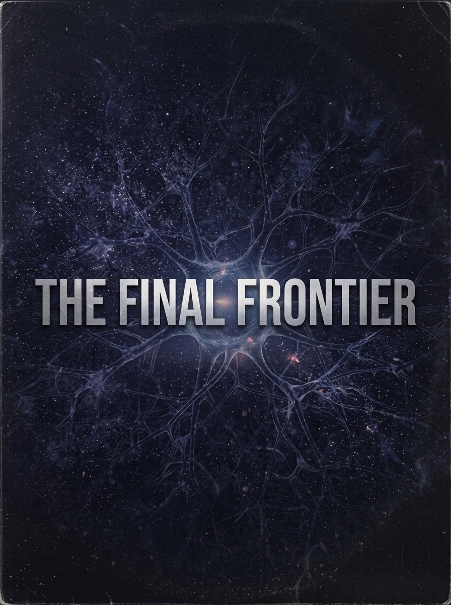

The Final Frontier
Somewhere behind the eyes there's a country with no army,
and one small question standing in the door.
A story about neural privacy and consent — about who gets to reach a thought, and who gets to say no. Around 150,000 words in 128 chapters, with a fullly narrated audiobook produced so that blind and print-disabled readers get the whole book, not a summary.

Get the book
Every edition is a release asset. Downloads are free and unmetered.
The audiobook
Narrated end to end by a cloned voice, then checked against the manuscript word by word so nothing the author wrote goes unspoken. The narration is licensed under the same terms as the prose, on purpose: the book's argument — that thought and consent belong to the person — should reach anyone, including readers who cannot use print.
Voice cloned from the Hi-Fi TTS dataset (SLR109), licensed CC BY 4.0. See the repository LICENSE for the full attribution.
Rendered locally with no cloud spend — Fish S2 Pro on a single Apple M4 Max (64 GB), about a day of machine time for the full ~13.4-hour book.
The songs — The Synaptic Frontier
The songs came first; the world grew out of them. Most exist twice — an orchestral version and an electronic remix. The album takes you down the orchestral path first, then back through the remixes, and closes on the lead-in to the sequel.
The tracks
Each song, orchestral and remix. Play a single one here, or use the album player above for the intended running order.
1 · The Synaptic Frontier
2 · Faraday
3 · The Final Frontier
4 · The Radius
5 · Case Zero
“Writable” — the lead-in to the sequel
“Writable” is the lead-in to Writable, the sequel to The Final Frontier. It exists only as an electronic track, so it follows both paths — on the album it lands after the orchestral set, though it sits just as naturally after the remixes.
Song recordings © 2026 Jessica Mulein / Mulein Studios LLC, all rights reserved. Lyrics for the album's songs are in the repository; “Writable” lyrics are held back with the sequel.
How it was built
The novel was treated like a software project: a written specification, a verification harness, reviewed increments, and a recorded decision for every step. The prose was drafted by large language models against that specification and revised under the author's direction. The full account, with commands to check every claim, is in the repository.
This book wasn't built with a general TTS pipeline, but the narration code written for it — omission diagnostics, verified-phrase repair, byte-bound resume — has been adopted into Digital-Defiance/ebook-tts and is being used to narrate the sequel, Writable.